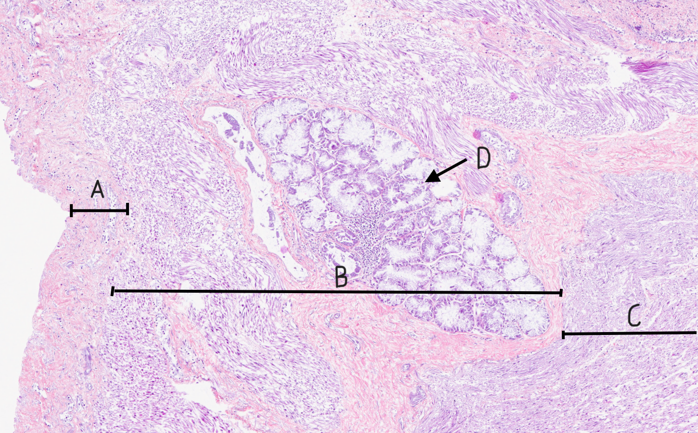
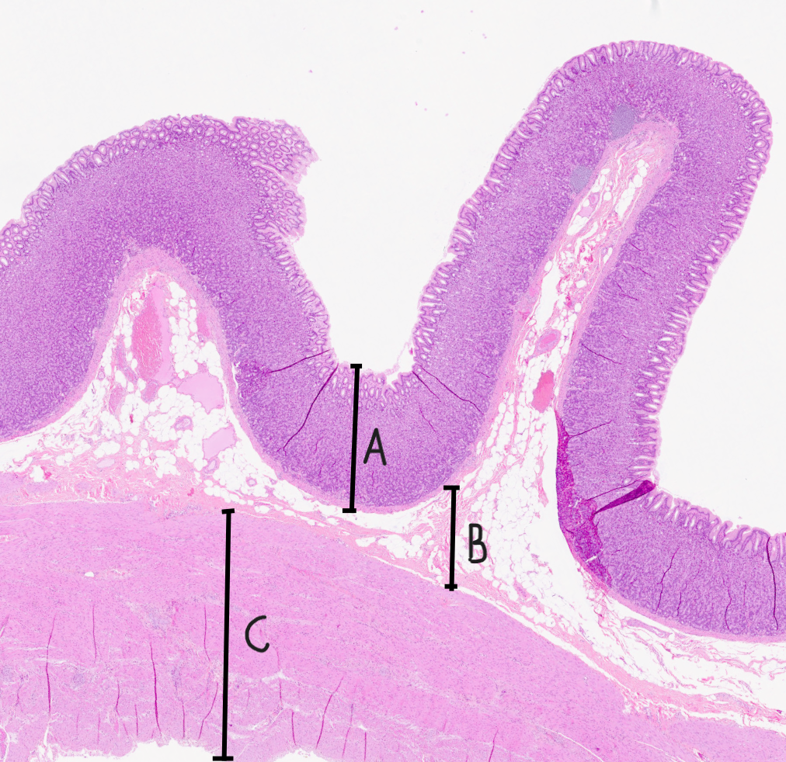
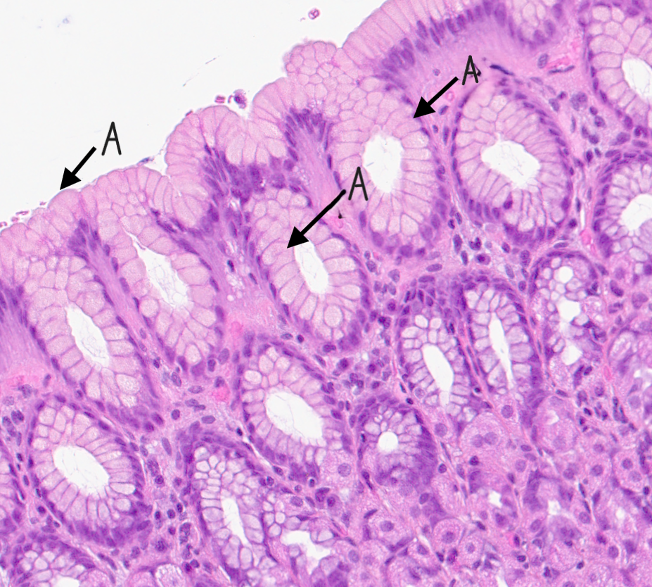
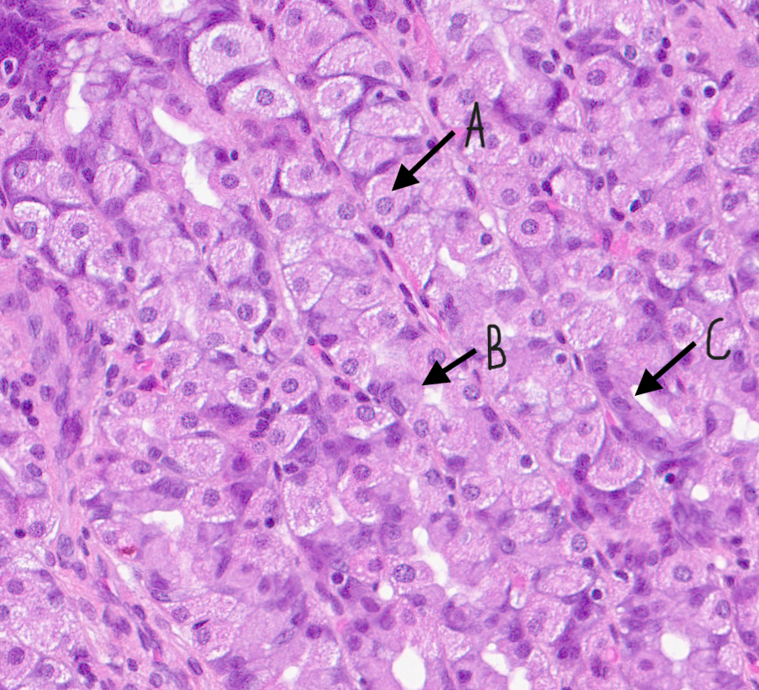
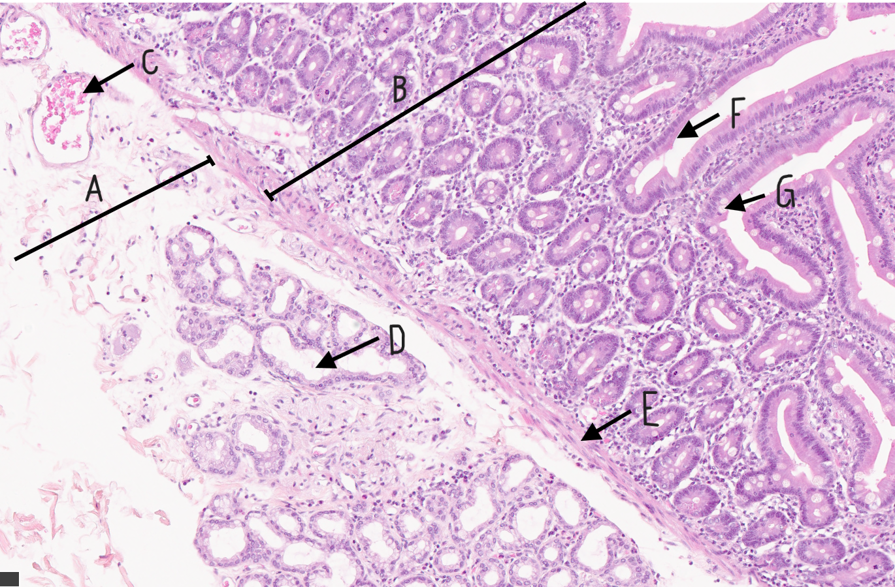
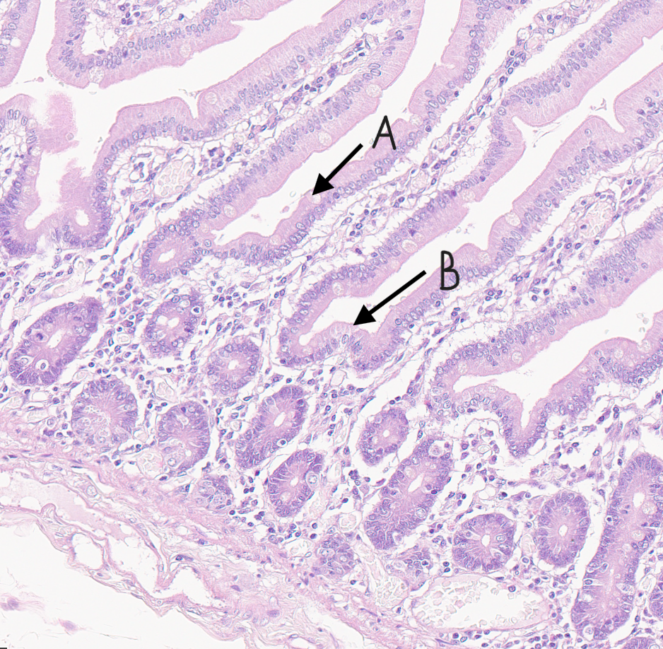
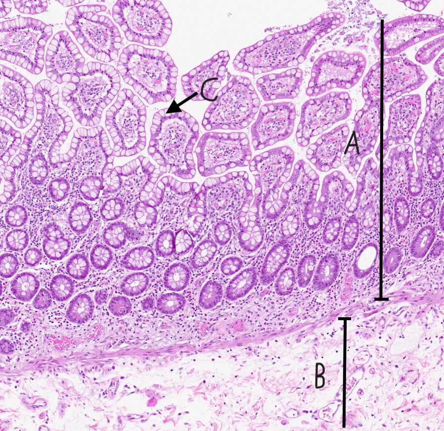
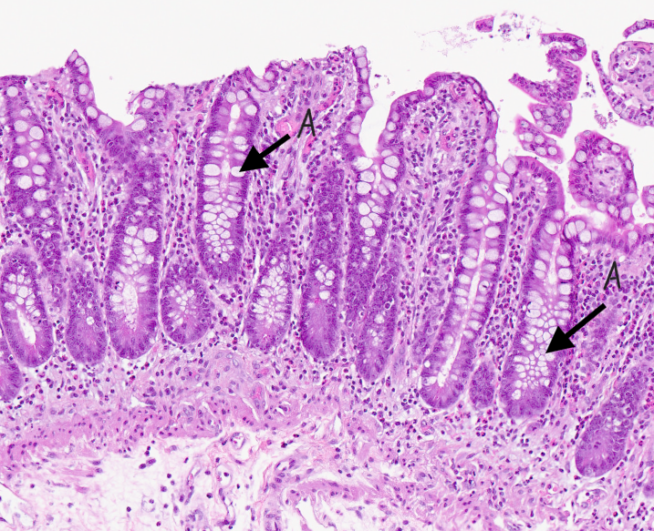
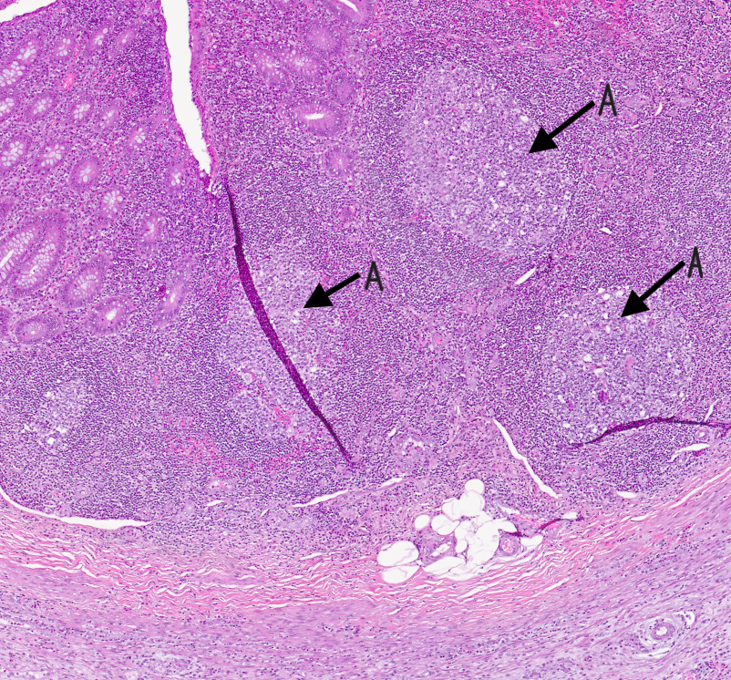

Digitale histologibilder av magesekk og tarm.
Spiserør del 1.
Spiserør del 2. Viser kjertler i submucosa, som er karakteristisk for spiserør.

Spiserør/oesophagus. A: Mucosa. B: Submucosa
C: Muscularis externa. D: Kjertler i submucosa.
Magesekk.

Oversikt over magesekk. A: Mucosa. B: Submucosa.
C: Muscularis externa.

Magesekk. A: Kubisk enlaga plateepitel.

Magesekk med kjertler. A: Pariatale celler.
B: Hovedcelle. C: Mucoid halscelle.
Duodenum. Det kan sees kjertler i mucosa, som er karakteristisk for duodenum.

Duodenum. A: Submucosa. B: Mucosa. C: Blodkar.
D: Kjertler i submucosa. E: Muscularis mucosae. G: Gobletceller.
Tynntarm farget med HES. Eldre snitt, med noe falmet farge.

Tynntarm. A: Gobletceller. B: Mikrovilli.
Tykktarm med lymfeknute. Noe falmet snitt.

Tykktarm. A: Muosa. B: Submucosa.
C: Gobletceller.

Tykktarm. A: Lieberkhunske krypter.
Appendix.

Appendix. A: Lymfoid vev, kalt germinale senter.